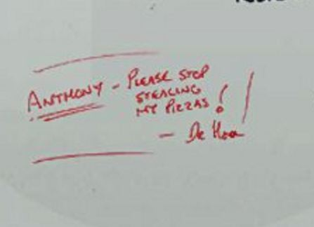

Do we even know?
Posting this here, seeing as how it’s technically a storyline theory:
Something bothers me about all this, something partly unconscious. The other day, I was reading through the clues (for the 5000th time) and something about the Tempus page really bugged me out. I couldn’t put my finger on it, so I began playing a video game and eventually forgot about it. But it came back today, so I went onto the page again and I think I figured it out. The bolded and italicized letters–I figured out why the “he” is italicized. It’s not accidental–it’s done to indicate that it’s actually a split in the message. This extra message has been noted as a possibility before, but I don’t think it’s been brought to the table that it’s intended.
The message, with no breaks and the formatting intact, is: seek Code out he is I watchin s g[/size] AI[/size]
The “he” signals the breaking point in the messages, so that there are actually two messages:
“Seek Code out he is watching.”
“Seek Code out he is AI.”
This is also reinforced by the fact that the “Is” and “AI” are bolded but not italicized.
Now, this isn’t anything too revolutionary, but it does beg the following question: If Storm was Code, and we discovered this, why then would he say that he was the AI? All of this time we have been seeking some renegade AI whilst Horn is supposedly on the run from people in the lab who were on to him . . . but why? Why would a man get so mad about them taking his niobium pizzas? The dude could just order more. Why would he communicate in such a halted manner–“Steals them. Eats them.”–versus simply directly communicating? We also receive various automated messages with random bits of data. Granted, this could all be shaped around the obscurity of the ARG, but I’m starting to think there’s more to the story.
I think the AI took over Dr. Horn, or is in some way directly influencing him. It explains why he is so upset about the niobium pizzas, and why he often speaks in broken English. It’s entirely possible that he was putting the niobium on the pizzas not only to sneak them in, but also to ingest them (thus supporting the AI in some way). We do get some direct hints that aren’t obscure, but these are the ones initiated by Storm–in this case, the ARG master, not Dr. Horn. The “It has come to my attention” message is one. Everything else is absolutely up in the air. The AI could actually be controlling someone else, for all we know.
The only thing that seems to go against this is Storm communicating with me over PM as Code, which brings me to a second possibility: The “he” could indicate both a split in the message and a stop. In other words, we are supposed to seek Code out for help, but there is also some other “he” watching which happens to be AI. If this second situation is the real one, then we have two distinct possibilities.
- Storm/Code is operating like the ARG-master and simply wants to help us along.
- Storm and Dr. Horn are both Dr. Horn, per-say, but Dr. Horn is the “antagonist” version whilst Storm is the “protagonist” version.
I definitely think that the AI is influencing someone directly, and my money’s on Dr. Horn (the antagonist version, if there are two). The rest of the scientists (Stone, etc.) are simply trying to either stop him from accomplishing some deed or trying to save their friend (and Horn is simply reacting as if they are evil). It makes far more sense in my mind that one man is potentially committing criminal acts versus a whole team of scientists doing the same.
EDIT: Unless they really are that pissed about the budget.
Unless the AI or an evil entity is influencing all of them, playing them against one another, driving them all into madness.
Is Dr. Horn Insane?
This also appears to be created by someone who is somewhat disturbed.
Well, Storm said he wanted a story so, here’s a story.
Chapter 1:
Yeah, he still has the photograph.
It had been 15 years or so but the image is still fresh in his mind. He reaches for his red marker and adds, yet again, another doodle to his keepsake.
[align=center]L M[/size][/align]
He was always the odd man out but his college roommate of 2 years, though younger, was someone he thought truly understood his genius and his quirks. Tony wasn’t perfect but, at least he had never made him look or feel like a fool like others had always done his entire life. He finally felt that he’d found someone he could actually trust for the first time in his life.
LIES[/size]
Tomorrow, he was to receive his post graduate degree and Tony said he was putting on a party for him in recognition of his accomplishment. Strange, but he’d never been at a party that he had ever enjoyed yet, this one was one that maybe he could actually enjoy.
How am I supposed to act?
What am I suppose to say?
How will I interact with all these strangers that are going to be there?
He really had no idea but he did know that this was something that he needed to do.
Actually, it wasn’t going to be anything more than a simple get-together in the dorm but, to him, it was going to be a coming out party with him as the guest of honor.
If only he knew.
Tony was handling everything. He said the only thing left up to him was to order the food and beer and have it delivered to the rec hall so it could be stored there and brought up as needed. Graduation was over by 4:00 and he was to have the food and beer delivered just in time for the eight o’clock party. Simple enough, place the order today and everything’s set. The Pizzaria was just a few blocks away so it should arrive hot and ready to devour. He calls them and places an order large enough to feed 40-60 people and then calls his mom to wire him the money so he could pay the bill. Tony told him to order a lot because he figured they could eat the leftovers for days to come. Guess it made sense and, after all, his mom was the one paying for it.
Chapter 2:
The next day was going by fast. Pizza was ordered, money is on its way and the ceremonies went real smooth. Now, it’s seven o’clock and time to prepare for the big event happening in just a little over an hour. He hadn’t heard from Tony since this morning and was starting to get worried.
Had something happened?
Is the party still on?
Eight o’clock and not a word. The dorm is empty and a sadness starts to take hold of him. Nine o’clock comes and goes and he sits alone in his room.
What was going on?
Why does stuff always happen to me?
Dammit, at least I can go to the rec hall and get my stuff. There’s nothing else to do anyway.
Approaching the rec hall he hears music and partying going on. What’s happening? Is this where I was supposed to have been? A rush of anticipation overwhelms him as he approached to front doors. Inside, there’s a huge party taking place with a banner hanging from the rafters. It read “In Honor of Anthony Stone, Bringer of Pizza and Beer”

If you guys want I can create a Google doc or Google community for this rather than it being on the thread where anyone can access it. So I can create a google doc by tomorrow (March 5, 2016) or the next day (March 6, 2016). And I’ll give all the main people permission to edit and contribute. (CPU, Flavrans, Gunsrequiem, Miles07 (he did cause Stormseeker to post), drgibbles, faed, nonimportantuser) if there is anyone I missed let me know. I’ll make another post when it’s all set up asking for e-mails and stuff.
Until then…
That guy in the picture, his name is Anthony. Or it’s possible anyway. 
That was the point of the story.
Horn’s college roommate that stole his pizzas was Tony, the future Dr. Anthony Stone.
My bad
I thought this was a bit story related so i decided to post it here rather than the main thread. Storm has mentioned that there are mini story lines that can be found in game so perhaps there are a few of them that we may or may not discovered that at first do not seem to be arg related but as we take a closer look and dig deeper into them we find that they overlap with the main story line. Perhaps we may find new patterns within the story itself that could aid us somehow. After all, Storm himself said that that the arg was designed to get people to look at the details and dig into the design of each level.